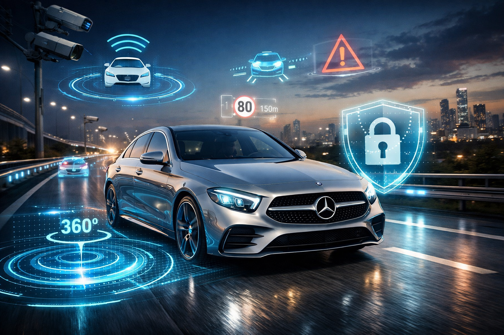
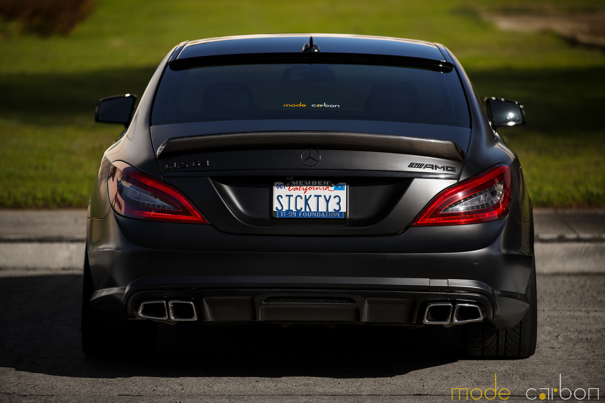
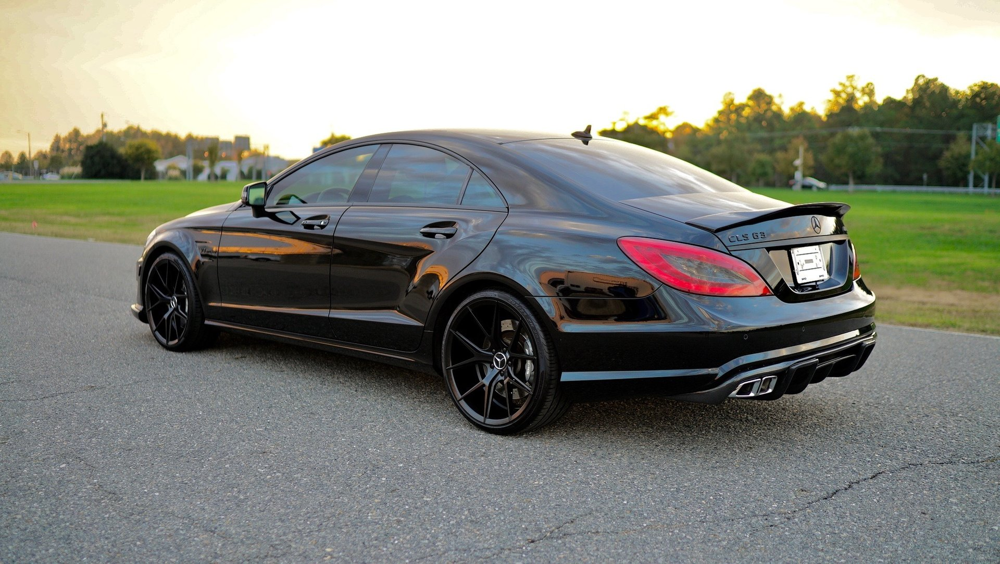
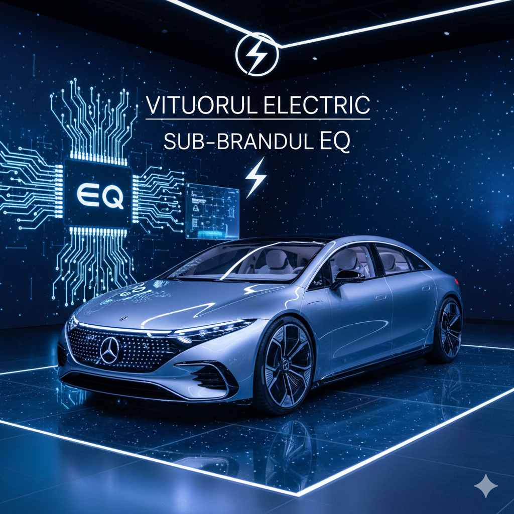

Sistemul MBUX (Mercedes-Benz User Experience) a revoluționat modul în care șoferii interacționează cu mașina, folosind inteligența artificială pentru a învăța preferințele utilizatorului. De la ecrane hiperscreen care acoperă tot bordul, până la asistenți vocali inteligenți, Mercedes-Benz redefinește luxul digital.
AMG reprezintă divizia de înaltă performanță a Mercedes-Benz. Fondată ca o companie independentă de inginerie, AMG transformă vehiculele de serie în mașini de circuit, respectând filozofia „One Man, One Engine” (un singur om construiește un motor de la început până la sfârșit).


Prin inițiativa "Ambition 2039", Mercedes-Benz își propune să aibă o flotă de autoturisme noi neutră din punct de vedere al emisiilor de carbon. Modele precum EQS și EQE demonstrează că sustenabilitatea poate merge mână în mână cu luxul suprem.
